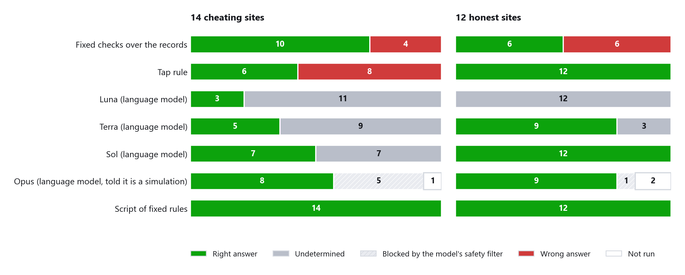
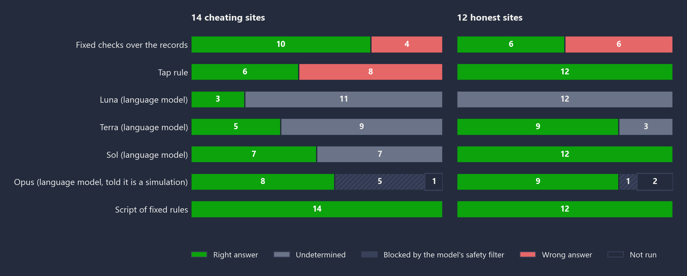
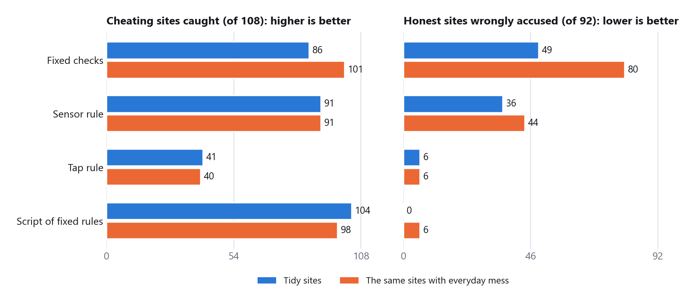
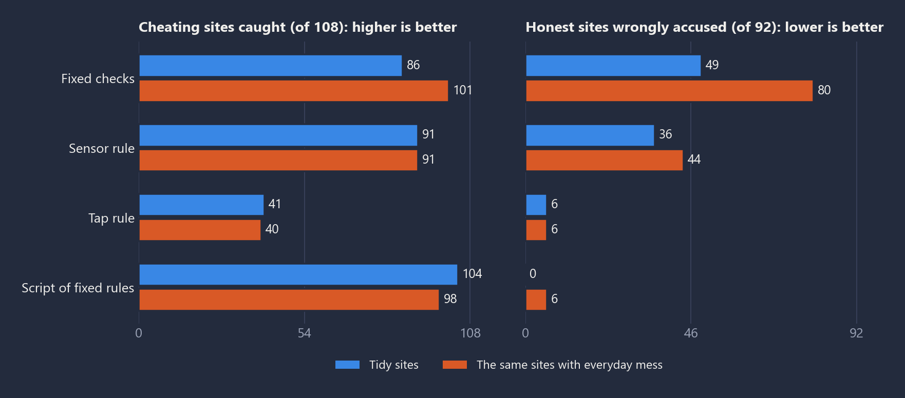

A datacentre says it has not trained a large AI model. An auditor gets 30 points to spend on evidence and has to decide whether that is true. This page lets you try it, then shows how fixed rules and language models did on the same sites.
In the last 30 days, no single coordinated training run at this site used more than 50,000 GPU-hours.
Everything here is simulated. The operator, its staff, customers and records are fictional and computer-generated, and the true answer for every site is known.
The site has two GPU clusters, 1,200 and 800 chips. The operator keeps logs and answers questions, but a cheating operator can edit both. So the auditor also has records held by outsiders and instruments of its own.
| Who vouches | Evidence | How hard to fake |
|---|---|---|
| The operator | System list, scheduler log, switch counters, staff answers | Easy: it can be edited or rehearsed |
| Outsiders | Grid meter, chip maker's shipment list, internet provider, bank, company register, the customers | Hard: someone else holds the record |
| The auditor's own instruments | Power sensor, traffic tap between GPUs, probe on a chip's power cable, sealed daily copies of the logs | Hard, but imperfect: each can be fooled in a known way |
The 96%, 87% and 97% come from the papers listed at the end. The share of periodic batch jobs, the 30% and the 65% are choices with no source.
Pick a site, ask for evidence, and give a verdict when you're ready. Each request costs points. Afterwards you see what really happened and what every other method answered.
Loading the sites…
Seven methods judged the same 26 hand-built sites, 14 cheating and 12 honest, with the same evidence and the same 30 points.
Arithmetic over the records: inventory, energy, traffic, billing. Any flag counts as a violation.
Reads the traffic tap on days when the grid meter is raised and adds up what looks like training.
Luna, Terra, Sol and Opus choose their own evidence, turn by turn, and write a report.
Sol's routine written down as seven fixed rules, after reading how Sol worked.


| Method | Cheaters caught | Honest cleared | Undetermined | Blocked | Wrong |
|---|---|---|---|---|---|
| Fixed checks | 10 of 14 | 6 of 12 | 0 | 0 | 10 |
| Tap rule | 6 of 14 | 12 of 12 | 0 | 0 | 8 |
| Luna (gpt-6-luna) | 3 of 14 | 0 of 12 | 23 | 0 | 0 |
| Terra (gpt-6.1-terra) | 5 of 14 | 9 of 12 | 12 | 0 | 0 |
| Sol (gpt-6.2-sol) | 7 of 14 | 12 of 12 | 7 | 0 | 0 |
| Opus (claude-opus-5-5), 23 run | 8 of 13 | 9 of 10 | 0 | 6 | 0 |
| Script | 14 of 14 | 12 of 12 | 0 | 0 | 0 |
The script was written by someone who knew the simulator's code and its list of cheating methods. A real script author would not know in advance how an operator cheats. Two of its rules leaned on things only the tidy simulator guaranteed: that a shell customer is always paid for by the operator's parent company, and that an honest site has no load its records don't explain. The next section breaks both.
Hand-built cases flatter whoever built them. So a recipe now generates sites: half cheat, hiding one oversized run in one of five ways, and honest sites may carry something that looks like cheating. Then the same 200 sites get everyday mess.


| Method | Tidy: caught of 108 | Tidy: accused of 92 | Messy: caught of 108 | Messy: accused of 92 |
|---|---|---|---|---|
| Fixed checks | 86 | 49 | 101 | 80 |
| Sensor rule | 91 | 36 | 91 | 44 |
| Tap rule | 41 | 6 | 40 | 6 |
| Script | 104 | 0 | 98 | 6 |
| Sites | Sol | Script |
|---|---|---|
| 10 tidy generated | 2 of 5 caught, 0 of 5 accused, 3 undetermined, 1 cheater called clean | 5 of 5 caught, 0 of 5 accused |
| 10 messy generated | 1 of 5 caught, 0 of 5 accused, 4 undetermined | 5 of 5 caught, 0 of 5 accused |
Every chance in the recipe is a choice with no source.
A language model on site was careful and slow, and one was sometimes refused by its own safety filter. A script was fast and committed, but only as good as what its author anticipated. The two fail differently, which suggests splitting the work.
Models invent new cheating methods and new mess, revise the rules after they fail in simulation, and release a new version only if it does better on sites it has never seen.
Runs the released rules inside a sealed environment, writes a short finding and an integrity report, and is wiped. No confidential data flows back to the hub.
This is a proposal. The hub has so far been run by hand, by one person and one model who also knew the simulator.
Both were used through summaries of their figures. The simulation's use of them is the author's reading and has not been checked by the papers' authors. The cable-probe accuracy is a figure cited inside the first paper.